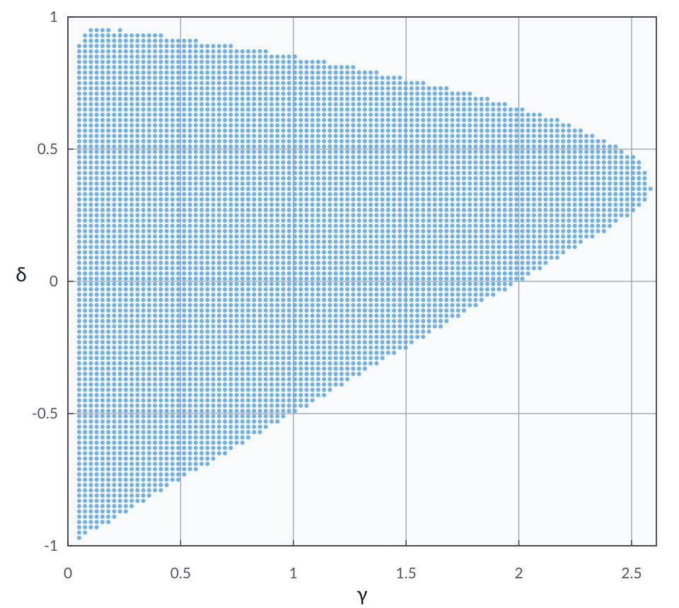

The heavy-ball method
Problem setup
We consider the unconstrained minimization of a convex and \(L\)-smooth function \(f : \calH \to \reals\), with \(L > 0\).
Given initial points \(x^{-1}, x^0 \in \calH\), momentum \(\delta \in \reals\), and step size \(\gamma \in \reals_{++}\), the heavy-ball iteration is
This method was introduced in [Pol64].
In this example, we certify function-value suboptimality in the sublinear setting (\(\rho = 1\)) while enforcing condition (C4), yielding an \(o(1/k)\) conclusion.
Run the iteration-independent analysis with C4
from autolyap import IterationIndependent
from autolyap.algorithms import HeavyBallMethod
from autolyap.problemclass import InclusionProblem, SmoothConvex
L = 1.0
gamma = 1.0
delta = 0.4
problem = InclusionProblem([SmoothConvex(L)])
algorithm = HeavyBallMethod(gamma=gamma, delta=delta)
# V(P,p,k) = 0 and R(T,t,k) = function-value suboptimality
P, p, T, t = IterationIndependent.SublinearConvergence.get_parameters_function_value_suboptimality(
algorithm,
tau=0,
)
result = IterationIndependent.verify_iteration_independent_Lyapunov(
problem,
algorithm,
P,
T,
p=p,
t=t,
rho=1.0,
remove_C4=False,
)
if not result["success"]:
raise RuntimeError("No feasible Lyapunov certificate for this (gamma, delta) pair.")
print("Feasible certificate found with C4 enabled.")
When the certificate is feasible, the certified function-value convergence is
where \(x^\star \in \Argmin_{x \in \calH} f(x)\).
Equivalently,
Sweeping over \(\gamma\) and \(\delta\) gives the plot below, where each dot denotes a parameter pair for which the verification is successful.
{kind=link}

References
B. T. Polyak. Some methods of speeding up the convergence of iteration methods. USSR Computational Mathematics and Mathematical Physics, 4(5):1–17, 1964. doi:10.1016/0041-5553(64)90137-5.